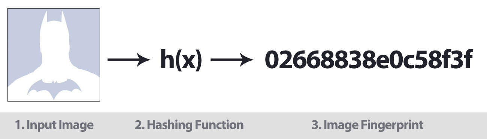
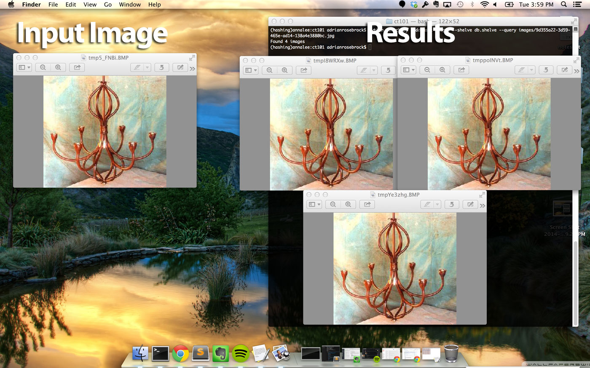
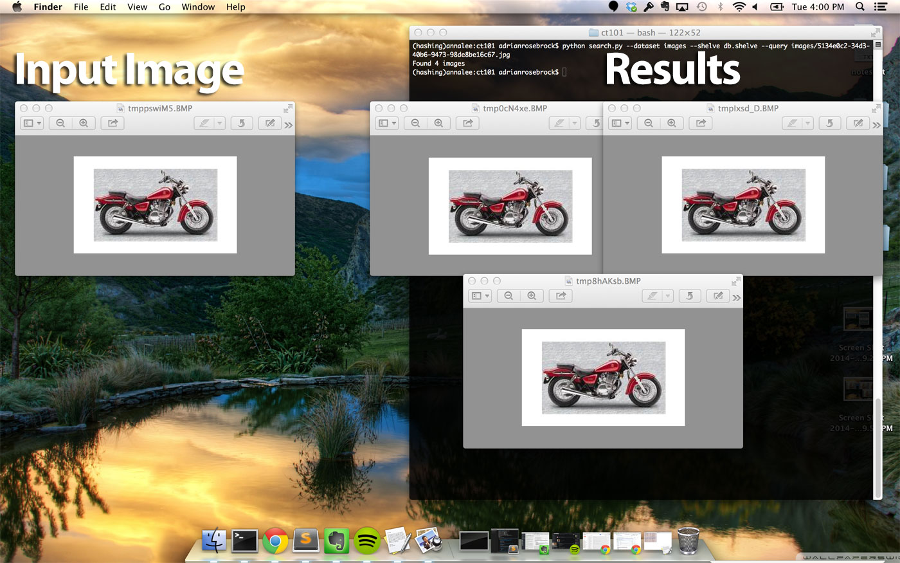

大概五年前吧，我那时还在为一家约会网站做开发工作。他们是早期创业公司，但他们也开始拥有了一些稳定用户量。不像其他约会网站，这家公司向来以洁身自好为主要市场形象。它不是一个供你鬼混的网站——是让你能找到忠实伴侣的地方。
由于投入了数以百万计的风险资本（在US大萧条之前），他们关于真爱并找寻灵魂伴侣的在线广告势如破竹。Forbes(福布斯，美国著名财经杂志)采访了他们。全国性电视节目也对他们进行了专访。早期的成功促成了事业起步时让人垂涎的指数级增长现象——他们的用户数量以每月加倍的速度增长。对他们而言，一切都似乎顺风顺水。
但他们有一个严重的问题——色情问题。
该约会网站的用户中会有一些人上传色情图片，然后设置为其个人头像。这种行为破坏了很多其他用户的体验——导致很多用户取消了会员。
可能对于现在的一些约会网站随处可见几张色情图片也许并不能称之为是问题。或者可以说是习以为常甚至有些期待，只是一个被接受然后被无视的在线约会的副产品。
然而，这样的行为既不应该被接受也应该被忽视。
别忘了，这次创业可是将自己定位在优秀的约会天堂，免于用户受到困扰其他约会网站的污秽和垃圾的烦扰。简而言之，他们拥有很实在的**以风险资本作为背后支撑的名声**，而这也正是他们需要保持的风格。
该约会网站为了能迅速阻止色情图片的爆发可以说是不顾一切了。他们雇佣了图片论坛版主团队，真是不做其他事只是每天盯着监管页面8个小时以上，然后移除任何被上传到社交网络的色情图片。
毫不夸张的说，他们投入了数万美元（更不用说数不清的人工小时）来解决这个问题，然而也仅仅只是缓解，控制情况不变严重而不是在源头上阻止。
色情图片的爆发在2009年的七月达到了临界水平。8个月来第一次用户量没能翻倍（甚至已经开始减少了）。更糟糕的是，投资者声称若该公司不能解决这个问题将会撤资。事实上，污秽的潮汐早已开始冲击这座象牙塔了，将它推翻流入大海也不过是时间问题。
正在这个约会网站巨头快要撑不住时，我提出了一个更鲁棒的长期解决方案：如果我们使用图片指纹来与色情图片的爆发斗争呢？
你看，每张图片都有一个指纹。正如人的指纹可以识别人，图片的指纹能识别图片。
这促使了一个三阶段算法的实现：
- 为不雅图片建立指纹，然后将图片指纹存储在一个数据库中。
- 当一个用户上传一份新的头像时，我们会将它与数据库中的图片指纹对比。如果上传图片的指纹与数据库任意一个不雅图片指纹相符，我们就阻止用户将该图片设置为个人头像。
- 当图片监管人标记新的色情图片时，这些图片也被赋予指纹并存入我们的数据库，建立一个能用于阻止非法上传且不断进化的数据库。
我们的方法，尽管不十分完美，但是也卓有成效。慢慢地，色情图片爆发的情况有所减慢。它永远不会消失——但这个算法让我们成功将非法上传的数量减少了**80%**以上。
这也挽回了投资者的心。他们继续为我们提供资金支持——直到萧条到来，我们都失业了。
回顾过去时，我不禁笑了。我的工作并没持续太久。这个公司也没有坚持太久。甚至还有几个投资者卷铺盖走人了。
但有一样确实存活了下来。提取图片指纹的算法。几年之后，我把这个算法的基本内容分享出来，期望你们可以将它应用到你们自己的项目中。
但最大的问题是，我们怎么才能建立图片指纹呢？
继续读下去一探究竟吧。
即将要做的事情
我们打算用图片指纹进行相似图片的检测。这种技术通常被称为“感知图像hash”或是简单的“图片hash”。
什么是图片指纹/图片哈希
图片hash是检测一张图片的内容然后根据检测的内容为图片建立一个唯一值的过程。
比如，看看本文最上面的那张图片。给定一张图片作为输入，应用一个hash函数，然后基于图片的视觉计算出一个图片hash。相似的图片也应当有相似的hash值。图片hash算法的应用使得相似图片的检测变得相当简单了。
特别地，我们将会使用“差别Hash”或简单的DHash算法计算图片指纹。简单来说，DHash算法着眼于两个相邻像素之间的差值。然后，基于这样的差值，就建立起一个hash值了。
为什么不使用md5,sha-1等算法？
不幸的是，我们不能在实现中使用加密hash算法。由于加密hash算法的本质使然，输入文件中非常微小的差别也能造成差异极大的hash值。而在图片指纹的案例中，我们实际上希望相似的输入可以有相似的hash输出值。
图片指纹可以用在哪里？
正如我上面举的例子，你可以使用图片指纹来维护一个保存不雅图片的数据库——当用户尝试上传类似图片时可以发出警告。
你可以建立一个图片的逆向搜索引擎，比如TinEye，它可以记录图片以及它们出现的相关网页。
你还可以使用图片指纹帮助管理你个人的照片收集。假设你有一个硬盘，上面有你照片库的一些局部备份，但需要一个方法删除局部备份，一张图片仅保留一份唯一的备份——图片指纹可以帮你做到。
简单来说，你几乎可以将图片指纹/哈希用于任何需要你检测图片的相似副本的场景中。
需要的库有哪些？
为了建立图片指纹方案，我们打算使用三个主要的Python包：
- PIL / Pillow 用于读取和载入图片
- ImageHash，包括DHash的实现
- 以及 NumPy / SciPy，ImageHash的依赖包
你可以使用下列命令一键安装所需要的必备库：
$ pip install pillow imagehash
第一步：为一个图片集建立指纹
第一步就是为我们的图片集建立指纹。
也许你会问，但我们不会，我们不会使用那些我为那家约会网站工作时的色情图片。相反，我创建了一个可供使用的人工数据集。
对计算机视觉的研究人员而言，数据集 CALTECH-101 是一个传奇般的存在。它包含来自101个不同分类中的至少7500张图片，内容分别有人物，摩托车和飞机。
从这7500多张图片中，我随机的挑选了17张。
然后，从这17张随机挑选的图片中，以几个百分点的比例随机放大/缩小并创建N张新图片。这里我们的目标是找到这些近似副本的图片——有点大海捞针的感觉。
你也想创建一个类似的数据集用于工作吗？那就下载 CALTECH-101 数据集，抽取大概17张图片即可，然后运行repo下的脚本文件gather.py。
回归正题，这些图片除了宽度和高度，其他各方面都是一样的。而且因为他们没有相同的形状，我们不能依赖简单的md5校验和。最重要的是，有相似内容的图片可能有完全不相同的md5哈希。然而，采取图片哈希，相似内容的图片也有相似的哈希指纹。
所以赶紧开始写代码为数据集建立指纹吧。创建一个新文件，命名为index.py，然后开始工作：
# import the necessary packages from PIL import Image import imagehash import argparse import shelve import glob # construct the argument parse and parse the arguments ap = argparse.ArgumentParser() ap.add_argument("-d", "--dataset", required = True, help = "path to input dataset of images") ap.add_argument("-s", "--shelve", required = True, help = "output shelve database") args = vars(ap.parse_args())
要做的第一件事就是引入我们需要的包。我们将使用PIL或Pillow中的Image类载入硬盘上的图片。这个imagehash库可以被用于构建哈希算法。
Argparse库用于解析命令行参数，shelve库用作一个存储在硬盘上的简单键值对数据库（Python字典）。glob库能很容易的获取图片路径。
然后传递命令行参数。第一个，—dataset是输入图片库的路径。第二个，—shelve是shelve数据库的输出路径。
下一步，打开shelve数据库以写数据。这个db数据库存储图片哈希。更多的如下所示：
# loop over the image dataset for imagePath in glob.glob(args["dataset"] + "/*.jpg"): # load the image and compute the difference hash image = Image.open(imagePath) h = str(imagehash.dhash(image)) # extract the filename from the path and update the database # using the hash as the key and the filename append to the # list of values filename = imagePath[imagePath.rfind("/") + 1:] db[h] = db.get(h, []) + [filename] # close the shelf database db.close()
以上就是大部分工作的内容了。开始循环从硬盘读取图片，创建图片指纹并存入数据库。
现在，来看看整个范例中最重要的两行代码：
filename = imagePath[imagePath.rfind("/") + 1:] db[h] = db.get(h, []) + [filename]
正如本文早些时候提到的，有相同指纹的图片被认为是一样的。
因此，如果我们的目标是找到近似图片，那就需要维护一个有相同指纹值的图片列表。
而这也正是这几行代码做的事情。
前一个代码段提取了图片的文件名。而后一个代码片段维护了一个有相同指纹值的图片列表。
为了从我们的数据库中提取图片指纹并建立哈希数据库，运行下列命令：
$ python index.py —dataset images —shelve db.shelve
这个脚本会运行几秒钟，完成后，就会出现一个名为db.shelve的文件，包含了图片指纹和文件名的键值对。
这个基本算法正是几年前我为这家约会创业公司工作时使用的算法。我们获得了一个不雅图片集，为其中的每张图片构建一个图片指纹并将其存入数据库。当来一张新图片时，我只需简单地计算它的哈希值，检测数据库查看是否上传图片已被标识为非法内容。
下一步中，我将展示实际如何执行查询，判定数据库中是否存在与所给图片具有相同哈希值的图片。
第二步：查询数据集
既然已经建立了一个图片指纹的数据库，那么现在就该搜索我们的数据集了。
打开一个新文件，命名为search.py，然后开始写代码：
# import the necessary packages from PIL import Image import imagehash import argparse import shelve # construct the argument parse and parse the arguments ap = argparse.ArgumentParser() ap.add_argument("-d", "--dataset", required = True, help = "path to dataset of images") ap.add_argument("-s", "--shelve", required = True, help = "output shelve database") ap.add_argument("-q", "--query", required = True, help = "path to the query image") args = vars(ap.parse_args())
我们需要再一次导入相关的包。然后转换命令行参数。需要三个选项，—dataset初始图片集的路径，—shelve，保存键值对的数据库的路径，—query，查询/上传图片的路径。我们的目标是对于每个查询图片，判定数据库中是否已经存在。
现在，写代码执行实际的查询：
# open the shelve database db = shelve.open(args["shelve"]) # load the query image, compute the difference image hash, and # and grab the images from the database that have the same hash # value query = Image.open(args["query"]) h = str(imagehash.dhash(query)) filenames = db[h] print "Found %d images" % (len(filenames)) # loop over the images for filename in filenames: image = Image.open(args["dataset"] + "/" + filename) image.show() # close the shelve database db.close()
首先打开数据库，然后载入硬盘上的图片，计算图片的指纹，找到具有相同指纹的所有图片。
如果有图片具有相同的哈希值，会遍历这些图片并展示在屏幕上。
这段代码使我们仅仅使用指纹值就能判定图片是否已在数据库中存在。
结果
正如本文早些时候提到的，我从CALTECH-101数据集的7500多张图片中随机选取17张，然后通过任意缩放一部分点产生N张新的图片。
这些图片在尺寸上仅仅是少数像素不同—但也是因为这一点我们不能依赖于文件的md5哈希（这一点已在“优化算法”部分进行了详尽的描述）。然而，我们可以使用图片哈希找到近似图片。
打开你的终端并执行下述命令：
$ python search.py —dataset images —shelve db.shelve —query images/84eba74d-38ae-4bf6-b8bd-79ffa1dad23a.jpg
如果一切顺利你就可以看到下述结果：
左边是输入图片。载入这张图片，计算它的图片指纹，在数据库中搜索指纹查看是否存在有相同指纹的图片。
当然——正如右边所示，我们的数据集中有其他两张指纹相同的图片。尽管从截图中还不能十分明显的看出，这些图片，虽然有完全相同的视觉内容，也不是完全相同！这三张图片的高度宽度各不相同。
尝试一下另外一个输入图片：
$ python search.py —dataset images —shelve db.shelve —query images/9d355a22-3d59-465e-ad14-138a4e3880bc.jpg
下面是结果：

左边仍然是我们的输入图片。正如右边展示的，我们的图片指纹算法能够找出具有相同指纹的三张完全相同的图片。
最后一个例子：
$ python search.py —dataset images —shelve db.shelve —query images/5134e0c2-34d3-40b6-9473-98de8be16c67.jpg

这一次左边的输入图片是一个摩托车。拿到这张摩托车图片，计算它的图片指纹，然后在指纹数据库中查找该指纹。正如我们在右边看到的，我们也能判断出数据库中有三张图片具有相同指纹。
优化算法
有很多可以优化本算法的方法——但最关键性的是要考虑到相似但不相同的哈希。
比如，本文中的图片仅仅是一小部分点重组了（依比例增大或减小）。如果一张图片以一个较大的因素调整大小，或者纵横比被改变了，对应的哈希就会不同了。
然而，这些图片应该仍然是相似的。
为了找到相似但不相同的图片，我们需要计算汉明距离（Hamming distance）.汉明距离被用于计算一个哈希中的不同位数。因此，哈希中只有一位不同的两张图片自然比有10位不同的图片更相似。
然而，我们遇到了第二个问题——算法的可扩展性。
考虑一下：我们有一张输入图片，又被要求在数据库中找到所有相似图片。然后我们必须计算输入图片和数据库中的每一张图片之间的汉明距离。
随着数据库规模的增长，和数据库比对的时间也随着延长。最终，我们的哈希数据库会达到一个线性比对已经不实际的规模。
解决办法，虽然已超出本文范围，就是利用 K-d trees 和 VP trees 将搜索问题的复杂度从线性减小到次线性。
总结
本文中我们学会了如何构建和使用图片哈希来完成相似图片的检测。这些图片哈希是使用图片的视觉内容构建的。
正如一个指纹可以识别一个人，图片哈希也能唯一的识别一张图片。
使用图片指纹的知识，我们建立了一个仅使用图片哈希就能找到和识别具有相似内容的图片的系统。
然后我们又演示了图片哈希是如何应用于快速找到有相似内容的图片。
从 repo 目录下下载代码。